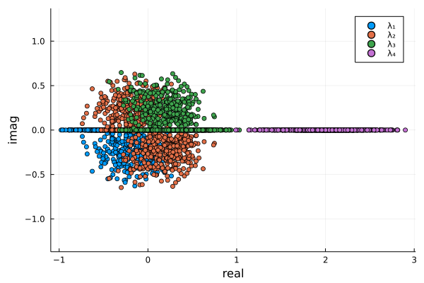

Eigenvalue computations
Singular values of the Entropic Space
The singular values of the generator matrix follows some structure.
using LinearAlgebra;
using Plots
scatter(svdvals(find_matrixG(2)[1]),label="Γ2")
scatter!(svdvals(find_matrixG(3)[1]),label="Γ3")
scatter!(svdvals(find_matrixG(4)[1]),label="Γ4")
scatter!(svdvals(find_matrixG(5)[1]),label="Γ5")
ylabel!("λ")
savefig("eigsEntropic.png") # hide
Eigenvalues of interval matrices
Given a (real or complex) interval matrix $A\in\mathbb{IC}^{n\times n}$, we define the eigenvalue set
\[\mathbf{\Lambda}=\{\lambda\in\mathbb{C}: \lambda\text{ is an eigenvalue of }A\text{ for some }A\in\mathbf{A}\}.\]
While characterizing the solution set $\mathbf{\Lambda}$ (or even its hull) is computationally challenging, the package offers the function TBD which contains an interval box containing $\mathbf{\Lambda}$.
At the moment, eigenbox is not rigorous, that is the computations for the non-interval eigenvalue problem solved internally are carried out using normal non-verified floating point computations.
To demonstrate the functionality, let us consider the following interval matrix
using InformationInequalities
A = [3 2 1
2 2 2
0 1 2]3×3 Matrix{Int64}:
3 2 1
2 2 2
0 1 2To get a qualitative evaluation of the enclosure, we can simulate the solution set of $\mathbf{A}$ using Montecarlo, as it is done in the following example
using LinearAlgebra;
using Plots
N = 1000
evalues = zeros(ComplexF64, 4, N)
for i in 1:N
evalues[:, i] = eigvals(rand(4,4))
end
rpart = real.(evalues)
ipart = imag.(evalues)
plot(; ratio=1, label="enclosure")
scatter!(rpart[1, :], ipart[1, :]; label="λ₁")
scatter!(rpart[2, :], ipart[2, :]; label="λ₂")
scatter!(rpart[3, :], ipart[3, :]; label="λ₃")
scatter!(rpart[4, :], ipart[4, :]; label="λ₄")
xlabel!("real")
ylabel!("imag")
Internally, the generical interval eigenvalue problem is